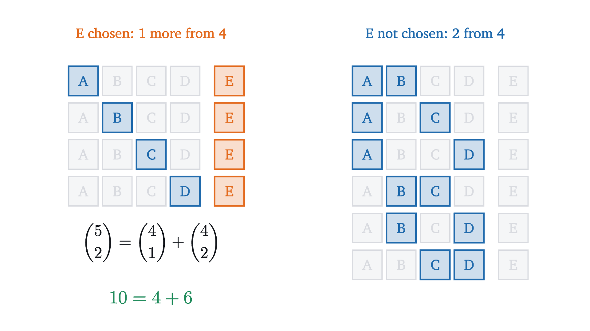
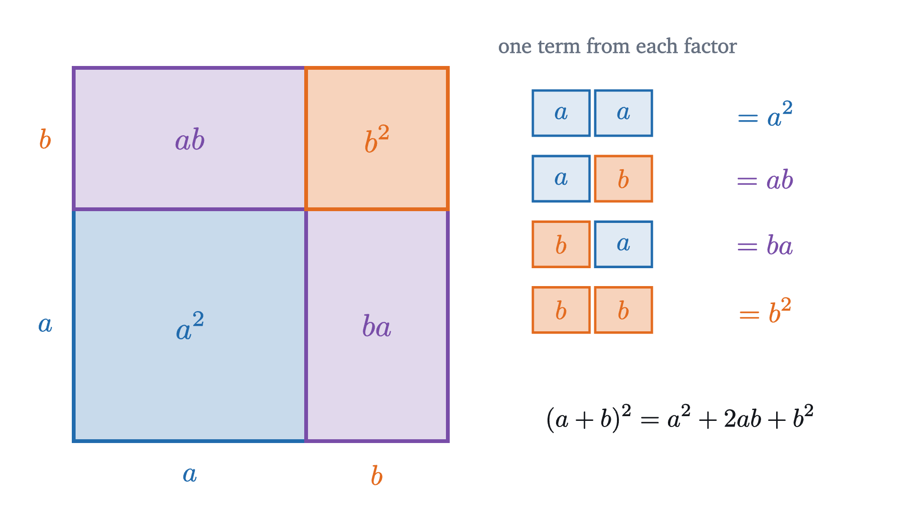
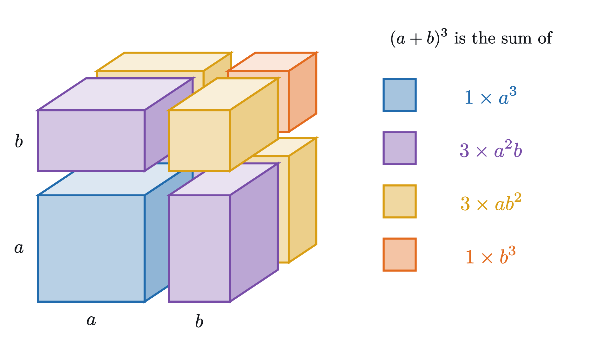
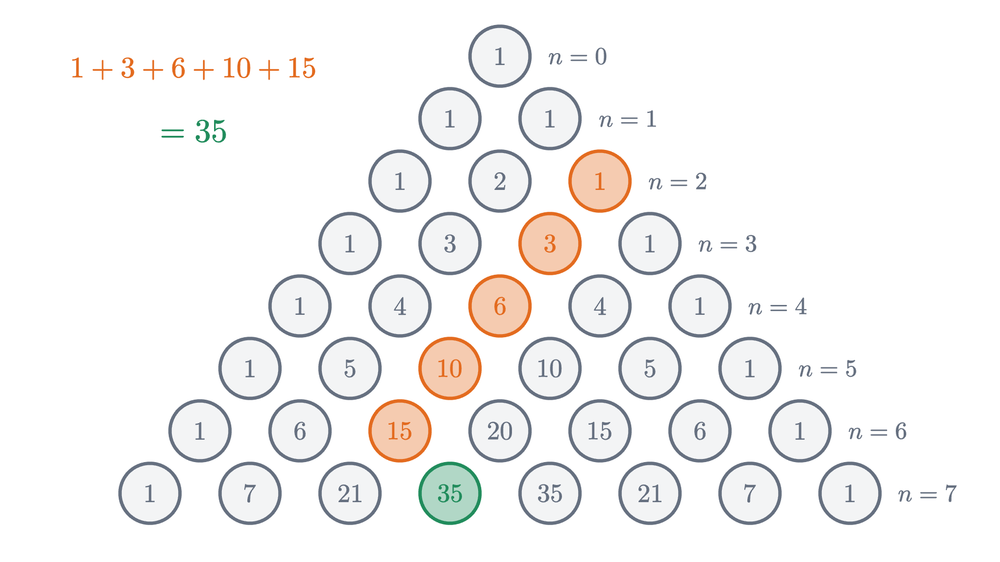

Pascal's triangle and the binomial theorem
Routes across a street grid and the coefficients of (a + b)^n are the same numbers. We prove Pascal's rule, the binomial theorem and the row sums by counting.
AssumesPermutations and combinations: counting without listing
Multiply out $(a + b)^4$ and the coefficients are 1, 4, 6, 4, 1. Now forget algebra and count the shortest routes across a street grid from one corner to the corner two blocks east and two blocks north. There are 6, the middle coefficient. The route counts to the other corners four moves away are 1, 4, 4 and 1.
An expansion and a street map have no obvious reason to agree. They agree because both are counting the same thing, a set of choices, and the array of numbers that records those counts is the triangle growing in the animation above. We will build the triangle from the street grid, find a formula for its entries, and then see why algebra produces it too.
Counting routes on a grid
A walker starts at the south-west corner of a grid of streets and may only move east or north, one block at a time. To how many places can she go, and in how many ways can she reach each one? Following whole routes gets confusing quickly. Ask a local question at each street corner instead: how many routes end here?
The third step is the whole method. A route into a corner made its last move either eastward, from the corner to the west, or northward, from the corner to the south. It cannot have done both, so the routes into the corner are the routes to the western neighbor plus the routes to the southern neighbor. On the two edges only one of those neighbors exists, and the count stays at 1.
Pause and try
Using only the rule, find the number of routes to the corner three blocks east and two blocks north of the start. Then find the number to the corner two east and two north, and compare with the opening paragraph.
Show answerHide answer
Fill in the corners in order. One block north of the start’s row the counts are 1, 2, 3, 4, and two blocks north they are 1, 3, 6, 10. So the corner three east and two north has $4 + 6 = 10$ routes, and the corner two east and two north has $3 + 3 = 6$.
The grid is a triangle
Group the corners by how many moves it takes to reach them. Zero moves reaches only the start. One move reaches two corners, two moves reach three, and the counts along these diagonals are 1, then 1 1, then 1 2 1, then 1 3 3 1. Turn the map so that the start is at the top and these diagonals become horizontal rows.
In this position the rule “west neighbor plus south neighbor” reads “the two entries above”. That gives a definition that no longer mentions streets.
The triangle is named for Blaise Pascal, who wrote a treatise on it in 1654. It was known centuries earlier to mathematicians in India, Persia and China.
A formula for the entries
The definition has a practical flaw: to find one entry of row 20 we must first compute rows 1 to 19. The street picture offers a way around this. A route to the corner $k$ blocks east and $n - k$ blocks north is a list of $n$ moves, $k$ of which are east, and the route is determined by saying which $k$ of the $n$ moves are the east ones. So the number of routes is the number of ways to choose $k$ positions out of $n$.
That count was found in the lesson on permutations and combinations. For integers $0 \le k \le n$, the number of $k$-element subsets of a set of $n$ distinct objects is written $\binom{n}{k}$, read “$n$ choose $k$”, and equals
because there are $n(n-1)\cdots(n-k+1)$ ordered ways to pick $k$ different objects and each subset is picked in $k!$ orders. For the corner two east and two north, $\binom{4}{2} = \frac{4 \cdot 3}{2} = 6$, as we found.
The street argument suggests that $T(n, k) = \binom{n}{k}$. To prove it without leaning on a picture, we show that the numbers $\binom{n}{k}$ obey the triangle’s addition rule.

The proof never used the formula with factorials. Problem 5 asks you to check the rule from the formula as well, and it is a useful exercise in fractions, but the counting argument is the one that says why the rule holds.
The last sentence of that proof, in which each row hands the property on to the next, is an argument by mathematical induction. It gets a lesson of its own.
Expanding $(a+b)^n$
Now the algebra. To expand $(a + b)^2 = (a + b)(a + b)$ with the distributive law, multiply each term of the first factor by each term of the second. The area picture of the distributive law shows the four products as the four parts of a square of side $a + b$.

Each product is made by taking one term from each factor: $a$ or $b$ from the first, and $a$ or $b$ from the second. There are $2 \times 2 = 4$ ways to do that. Two of them, $ab$ and $ba$, are equal, and that is the only reason a coefficient other than 1 appears.
Pause and try
Expanding $(a + b)^3 = (a+b)(a+b)(a+b)$ means taking one term from each of three factors. How many products are there before collecting like terms? How many of them equal $a^2b$?
Show answerHide answer
Each of the three factors offers 2 choices, so there are $2^3 = 8$ products. A product equals $a^2b$ when $b$ is taken from exactly one factor, and that factor can be the first, second or third. So 3 of the 8 products are $a^2b$.
For three factors the square becomes a cube of side $a + b$, and the eight products are eight blocks.

Nothing changes with more factors except that we can no longer draw the picture.
The numbers $\binom{n}{k}$ are called binomial coefficients for this reason: a binomial is a sum of two terms. One step of the proof was quicker than it looks. “Applied repeatedly” hides a small induction on the number of factors, and the whole theorem can instead be proved by induction on $n$ using Pascal’s rule. Problem 9 does that in full.
Row sums
Add up each of the first few rows: 1, 2, 4, 8, 16. The sums double.
Pause and try
Row 5 is 1, 5, 10, 10, 5, 1, with sum 32. Before reading on, find a reason why the sum of row 6 must be 64 without computing row 6. Use the rule that builds the triangle.
Show answerHide answer
Each entry of row 6 is the sum of the one or two entries of row 5 above it. Adding all of row 6 therefore adds every entry of row 5 exactly twice: once in the entry below and to its left, once in the entry below and to its right. So the sum is $2 \times 32 = 64$.
The doubling argument of the last exercise is a third proof, and the three are the same idea in different clothes. For the walker it says: there are $2^n$ routes of $n$ moves, since each move is east or north, and sorting them by where they end gives row $n$.
Worked examples

Where the theorem stops
The binomial theorem has two hypotheses that are easy to overlook. The exponent $n$ is a non-negative integer, because the proof multiplies out $n$ factors. For an exponent such as $\frac12$ there is no finite expansion; Newton found an infinite series that plays the same role, and making sense of it needs calculus. And the proof used $ab = ba$. For objects whose multiplication is not commutative the collecting step fails. Square matrices are an example: $(A + B)^2 = A^2 + AB + BA + B^2$, and this is not $A^2 + 2AB + B^2$ unless $AB = BA$.
A third slip is to miscount rows. Row $n$ is the row whose second entry is $n$, so the top row is row 0, and the coefficients of $(a+b)^4$ are in the fifth line of the triangle as drawn.
Stepping back
The difficulty at the start was that two unrelated problems gave the same numbers. The resolution is that both are sums over the ways to choose $k$ things out of $n$, and that such choices can be counted by a rule which looks one step back: the last thing is either chosen or not. The triangle is the table that rule generates, and the formula $\frac{n!}{k!(n-k)!}$ is a shortcut into the middle of the table. When binomial coefficients appear in a problem, look for the hidden choice of $k$ things from $n$. Their largest application is in probability, where they give the binomial distribution for the number of successes in $n$ trials.
Check yourself
What is the coefficient of $a^2b^3$ in the expansion of $(a + b)^5$?
Problems
Problems 1 to 4 are direct. Problems 5 to 7 ask for proofs or estimates. Problems 8 and 9 are longer.
Problem 1
Write out rows 6 and 7 of Pascal’s triangle and use row 7 to expand $(x + 1)^7$.
Show solutionHide solution
Row 5 is $1, 5, 10, 10, 5, 1$. Adding neighbors: row 6 is $1, 6, 15, 20, 15, 6, 1$ and row 7 is $1, 7, 21, 35, 35, 21, 7, 1$. With $a = x$ and $b = 1$,
Check: the coefficients sum to $128 = 2^7$, the value at $x = 1$.
Problem 2
Expand $(2x - 3)^4$.
Show solutionHide solution
Row 4 is $1, 4, 6, 4, 1$, with $a = 2x$ and $b = -3$:
Check at $x = 1$: $(2 - 3)^4 = 1$ and $16 - 96 + 216 - 216 + 81 = 1$.
Problem 3
A walker moves only east or north on a street grid. (a) How many routes lead from the start to the corner 6 blocks east and 4 blocks north? (b) How many of those pass through the corner 3 east and 2 north?
Show solutionHide solution
(a) A route is a list of 10 moves of which 4 are north, so there are $\binom{10}{4} = \frac{10 \cdot 9 \cdot 8 \cdot 7}{24} = 210$. (b) A route through the middle corner is a route to it followed by a route from it. There are $\binom{5}{2} = 10$ routes to the corner. From there the walker needs 3 more blocks east and 2 more north, again $\binom{5}{2} = 10$ routes, whatever the first half was. By the product rule there are $10 \cdot 10 = 100$.
Problem 4
Find the coefficient of $x^2y^3$ in $(x - 2y)^5$.
Show solutionHide solution
The term with $b = -2y$ taken from 3 factors is $\binom{5}{3} x^2 (-2y)^3 = 10 \cdot (-8)\, x^2y^3$, so the coefficient is $-80$.
Problem 5
Prove Pascal’s rule from the formula $\binom{n}{k} = \frac{n!}{k!\,(n-k)!}$, for $0 < k < n$.
Show solutionHide solution
Put the two fractions over the common denominator $k!\,(n-k)!$. Since $k! = k \cdot (k-1)!$ and $(n-k)! = (n-k)\cdot(n-k-1)!$,
The numerators add to $(n-1)!\,(k + n - k) = (n-1)!\,n = n!$, so the sum is $\frac{n!}{k!\,(n-k)!} = \binom{n}{k}$.
Problem 6
Show that for $n \ge 1$ the alternating sum of row $n$ is zero: $\binom{n}{0} - \binom{n}{1} + \binom{n}{2} - \dots + (-1)^n\binom{n}{n} = 0$. Give a proof from the binomial theorem and a counting proof.
Show solutionHide solution
Binomial theorem. Put $a = 1$ and $b = -1$: $0 = (1 - 1)^n = \sum_k \binom{n}{k}(-1)^k$, valid for $n \ge 1$. Counting. The claim says that $\{1, \dots, n\}$ has as many subsets of even size as of odd size. Match each subset $S$ with the subset obtained by toggling the element $n$: remove $n$ if $S$ contains it, add it if not. This changes the size by one, so it matches even-sized subsets with odd-sized ones, and toggling twice returns the original, so the matching is a bijection. Hence the two kinds are equally numerous, each $2^{n-1}$. (For $n = 0$ the only subset is the empty set and the sum is 1, which is why $n \ge 1$ is needed.)
Problem 7
Use the binomial theorem to compute $1.01^{10}$ to five decimal places without a calculator.
Show solutionHide solution
$(1 + 0.01)^{10} = 1 + 10(0.01) + 45(0.01)^2 + 120(0.01)^3 + 210(0.01)^4 + \dots = 1 + 0.1 + 0.0045 + 0.00012 + 0.0000021 + \dots$ The first five terms add to $1.1046221$. The next term is $252 \times 10^{-10}$, about $0.00000003$, and the later ones are smaller still, so $1.01^{10} \approx 1.10462$.
Problem 8
Prove that $\displaystyle\binom{n}{0}^2 + \binom{n}{1}^2 + \dots + \binom{n}{n}^2 = \binom{2n}{n}$ by counting routes on a grid. Check it for $n = 3$.
Show solutionHide solution
Count the routes from the start to the corner $n$ blocks east and $n$ blocks north. Each has $2n$ moves of which $n$ are east, so there are $\binom{2n}{n}$. Now sort the routes by where they are after exactly $n$ moves. At that moment a route is at a corner $k$ blocks east and $n - k$ blocks north for exactly one $k$ between 0 and $n$. There are $\binom{n}{k}$ ways to get there. The remaining $n$ moves must include $n - k$ east moves, which can be placed in $\binom{n}{n-k} = \binom{n}{k}$ ways. By the product rule $\binom{n}{k}^2$ routes pass through that corner, and summing over $k$ counts every route once. For $n = 3$: $1 + 9 + 9 + 1 = 20 = \binom{6}{3}$.
Problem 9
Prove the binomial theorem by induction on $n$: assume the formula holds for the exponent $n$, multiply by $(a + b)$, and use Pascal’s rule to obtain the formula for $n + 1$.
Show solutionHide solution
For $n = 0$ both sides equal 1. Suppose $(a+b)^n = \sum_{k=0}^n \binom{n}{k}a^{n-k}b^k$ for some $n \ge 0$. Then
In the second sum rename $k + 1$ as $k$, so it becomes $\sum_{k=1}^{n+1} \binom{n}{k-1}a^{n+1-k}b^{k}$. Now both sums contain the same monomials $a^{n+1-k}b^k$. The monomial $a^{n+1}$ (that is, $k = 0$) occurs only in the first sum, with coefficient $\binom{n}{0} = 1 = \binom{n+1}{0}$. The monomial $b^{n+1}$ occurs only in the second, with coefficient $\binom{n}{n} = 1 = \binom{n+1}{n+1}$. For $1 \le k \le n$ the coefficient of $a^{n+1-k}b^k$ is $\binom{n}{k} + \binom{n}{k-1}$, which is $\binom{n+1}{k}$ by Pascal’s rule. So $(a+b)^{n+1} = \sum_{k=0}^{n+1}\binom{n+1}{k}a^{n+1-k}b^k$, which is the formula for $n + 1$. Since it holds for $n = 0$, it holds for every $n \ge 0$.